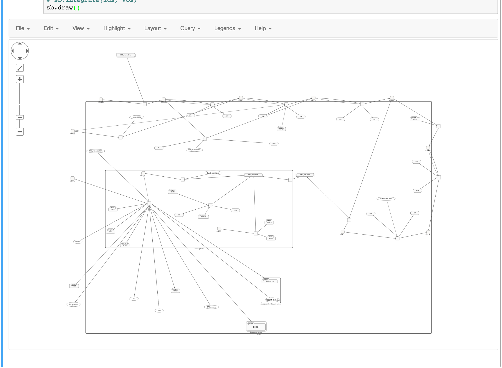
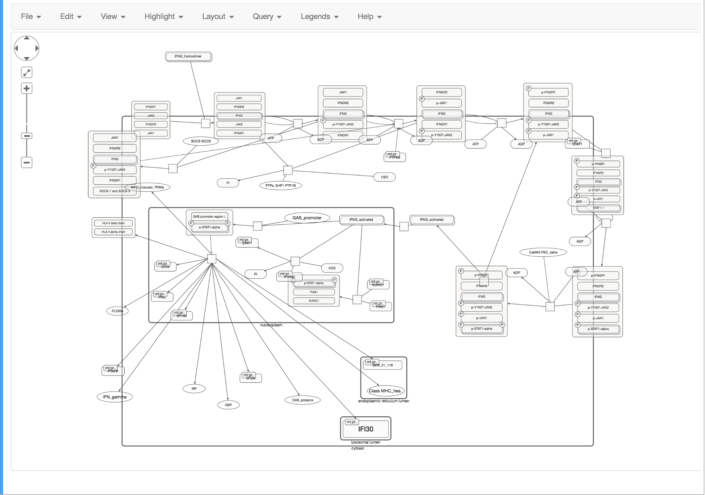

Format Discuss
Overview
We are trying to support main-stream pathway format: KGML, BioPAX, SBGN-PD and GMPL.
Choice
- For the visualization purpose, we prefer more on the format which contains layout info. So the
SBGNformat is the first choice. KGMLandGPMLare from KEGG and WikiPathway, both are human made and well desgined data. so we DO NOT convert it toBioPAXorSBGNintend to keep is original looking.BioPAX, its visualization require additional layout procedure, so, if not necessary, we will use other format replace it.
Reactome
Reactome provide SBML, BioPAX and SBGN in Restful API and download section.
1. BioPAX
BioPAX file does not contain layout info, its visualization requires a lyaout generation. So we can not get the layout same as the one from reactome website.
2. SBGN
The SBGN file retrieved from Reactome Webserver look likes:

issues and solutions
- the
scaleof the graphic seem uncorrect, After enlarge theglyphshould improve the visibility. - The complex lose its contents, we read the
BioPAXfile and add the elements to thecomplexentity. - The loss of
state variable.
After the sbgn fix

- we get a better pathway graphic, however, some small detail remain wrong, move it to avoid overlap.
ToDo:
- fix the overlap issue
WikiPathway
1. GPML:
GPML is the original format and recommanded to use.
2. BioPAX
The Paxtools layout is not as good as GPML’s layout.
KEGG
use KGML